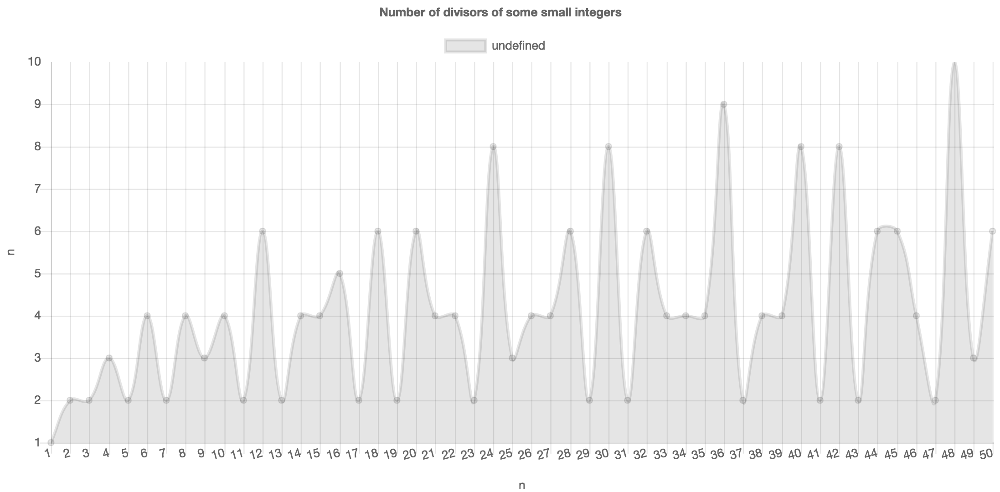

This section covers the Plot (7.1-1) function in the high-level API, which is used for showing charts and plots. If invoked in a Jupyter Notebook, it will show the resulting visualization in the appropriate output cell of the notebook. If invoked from the GAP command line, it will use the system default web browser to show the resulting visualization, from which the user can save a permanent copy, print it, etc. This section covers that function through a series of examples, but you can see full details in the function reference in Chapter 7.
To plot a list of numbers as a single data series, just pass the list to Plot (7.1-1).
Plot( [ 6.2, 0.3, 9.1, 8.8 ] );
Notice that the default x values for the data are the sequence [1..n], where n is the length of the data. You can specify the x values manually, like so:
Plot( [ 1 .. 4 ], [ 6.2, 0.3, 9.1, 8.8 ] );
This is useful if you have a scatter plot of data to make, or if your x values are not numbers at all.
Plot( [ "Mon", "Tue", "Wed", "Thu" ], [ 6.2, 0.3, 9.1, 8.8 ] );
It is also permissible to send in a list of (x,y) pairs rather than placing the xs and ys in separate lists. This would do the same as the previous:
Plot( [ [ "Mon", 6.2 ], [ "Tue", 0.3 ], [ "Wed", 9.1 ], [ "Thu", 8.8 ] ] );
You can also pass a single-variable numeric function to have it plotted.
Plot( x -> x^0.5 );
It assumes a small domain of positive integers, which you can customize as follows. Note that the x values are passed just as before, but in place of the y values, we pass the function that computes them.
Plot( [1..50], NrSmallGroups );
You can append a final parameter to the Plot (7.1-1) command, a record containing a set of options. Here is an example of using that options record to choose the visualization tool, title, and axis labels. Section 2.2 covers options in detail; this is only a preview.
Plot( [1..50], n -> Length( DivisorsInt( n ) ),
rec(
tool := "chartjs",
title := "Number of divisors of some small integers",
xaxis := "n",
yaxis := "number of divisors of n"
)
);

You can also put multiple data series (or functions) on the same plot. Let's pretend you wanted to compare the number of divisors of n with the number of groups of order n for the first 50 positive integers n.
To do so, take each call you would make to Plot (7.1-1) to make the separate plots, and place those arguments in a list. Pass both lists to Plot (7.1-1) to combine the plots, as shown below. You can put the options record in either list. Options specified earlier take precedence if there's a conflict.
# We're combining Plot( [1..50], NrSmallGroups );
# with Plot( [1..50], n -> Length( DivisorsInt( n ) ) );
# and adding some options:
Plot(
[ [1..50], NrSmallGroups,
rec( title := "Comparison", tool := "anychart" ) ],
[ [1..50], n -> Length( DivisorsInt( n ) ) ]
);
The default plot type is "line", as you've been seeing in the preceding examples. You can also choose "bar", "column", "pie", and others. Let's use a pie chart to show the relative sizes of the conjugacy classes in a group.
G := Group( (1,2,3,4,5,6,7), (1,2) );;
CCs := List( ConjugacyClasses( G ), Set );;
Plot(
# x values are class labels; we'll use the first element in the class
List( CCs, C -> PrintString( C[1] ) ),
# y values are class sizes; these determine the size of pie slices
List( CCs, Length ),
# ask for a pie chart with enough height that we can read the legend
rec( type := "pie", height := 500 )
);
The options record passed as the final parameter to Plot (7.1-1) (or as the final element in each list passed to Plot (7.1-1), if you are plotting multiple series on the same plot) can have the following entries.
tool - the visualization tool to use to make the plot, as a string. The default is "plotly". The full list of tools is available in Section 1.2.
type - the type of chart, as a string, the default for which is "line". Which types are available depends on which tool you are using, though it is safe to assume that most common chart types (line, bar, pie) are supported by all tools. Section 3.4 contains links to the documentation for each tool, so that you might see its full list of capabilities.
height - the height in pixels of the visualization to produce. A sensible default is provided, which varies by tool.
width - the width in pixels of the visualization to produce. If omitted, the tool usually fills the width available. In a Jupyter Notebook output cell, this is the width of the cell. A visualization shown outside of a Jupyter notebook will take up the entire width of the web page in which it is displayed.
title - the title to place at the top of the chart, as a string. Can be omitted.
xaxis - the text to write below the x axis, as a string. Can be omitted.
yaxis - the text to write to the left of the y axis, as a string. Can be omitted.
name - this option should be specified in the options object for each separate data series, as opposed to just once for the entire plot. It assigns a string name to that data series, typically included in the chart's legend.
This section covers the PlotGraph (7.1-3) function in the high-level API, which is used for drawing graphs. If invoked in a Jupyter Notebook, it will show the resulting visualization in the appropriate output cell of the notebook. If invoked from the GAP command line, it will use the system default web browser to show the resulting visualization. This section covers that function through a series of examples, but you can see full details in the function reference in Chapter 7.
You can make a graph by calling PlotGraph (7.1-3) on a list of edges, each of which is a pair (a list of length two).
PlotGraph( [ [ "start", "option1" ], [ "start", "option2" ],
[ "option1", "end" ], [ "option2", "end" ] ] );
Vertex names can be strings, as shown above, or any GAP data; they will be converted to strings using PrintString. As you can see, the set of vertices is assumed to be the set of things mentioned in the edges. But you can specify the vertex set separately.
For example, if you wanted to graph the divisibility relation on a set of integers, some elements may not be included in any edge.
PlotGraph( [ 2 .. 10 ],
[ [ 2, 4 ], [ 2, 6 ], [ 2, 8 ], [ 2, 10 ],
[ 3, 6 ], [ 3, 9 ], [ 4, 8 ], [ 5, 10 ] ] );
But for anything other than a small graph, specifying the vertex or edge set manually may be inconvenient. Thus if you have a vertex set, you can create the edge set by passing a binary relation as a GAP function. Here is an example to create a subgroup lattice.
G := Group( (1,2,3), (1,2) );
S := function ( H, G )
return IsSubgroup( G, H ) and H <> G;
end;
PlotGraph( AllSubgroups( G ), S );
But all three of the graphs just shown would be better if they had directed edges. And we might want to organize them differently in the view, perhaps even with some colors, etc. To this end, you can pass an options parameter as the final parameter to PlotGraph (7.1-3), just as you could for Plot (7.1-1).
G := Group( (1,2,3), (1,2) );
S := function ( H, G )
return IsSubgroup( G, H ) and H <> G;
end;
PlotGraph( AllSubgroups( G ), S,
rec( directed := true, layout := "grid", arrowscale := 3 ) );
The next section covers all options in detail.
The options record passed as the final parameter to PlotGraph (7.1-3) can have the following entries.
tool - the visualization tool to use to make the plot, as a string. The default is "cytoscape". The full list of tools is available in Section 1.2.
layout - the name of the layout algorithm to use, as a string. Permitted values vary by tool. Currently cytoscape supports "preset" (meaning you must have specified the nodes' positions manually), "cose" (virtual-spring-based automatic layout), "random", "grid", "circle", "concentric" (multiple concentric circles), and "breadthfirst" (a hierarchy).
vertexwidth and vertexheight - the dimensions of each vertex.
vertexcolor - the color of the vertices in the graph. This should be a string representing an HTML color, such as "#ccc" or "red".
edgewidth - the thickness of each edge.
edgecolor - the color of each edge and its corresponding arrow. This should be a string representing an HTML color, such as "#ccc" or "red".
directed - a boolean defaulting to false, whether to draw arrows to visually indicate that the graph is a directed graph
arrowscale - a multiplier to increase or decrease the size of arrows in a directed graph.
height - the height in pixels of the visualization to produce. A sensible default is provided, which varies by tool.
width - the width in pixels of the visualization to produce. If omitted, the tool usually fills the width available. In a Jupyter Notebook output cell, this is the width of the cell. A visualization shown outside of a Jupyter notebook will take up the entire width of the web page in which it is displayed.
generated by GAPDoc2HTML